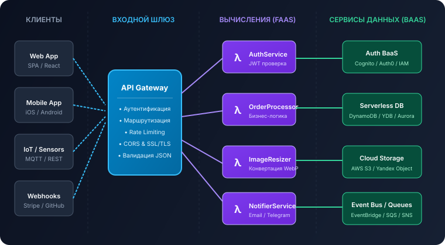
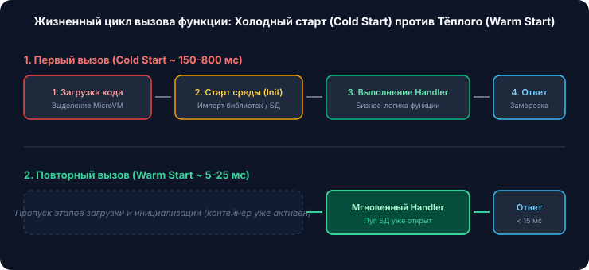

1. Генеральная схема архитектуры
В современной бессерверной архитектуре система декомпозируется на независимые, слабосвязанные сервисы, взаимодействующие через асинхронные очереди или синхронные вызовы API Gateway:

2. FaaS (Function as a Service)
FaaS — это вычислительное сердце бессерверной парадигмы. Разработчик загружает в облако изолированную функцию (handler), принимающую объект события (event) и возвращающую результат.
Как платформа изолирует функции?
- MicroVM (Микровиртуальные машины): Такие технологии, как Firecracker (используется в AWS Lambda), запускают легковесную виртуальную машину Linux на базе KVM за рекордные 5–15 миллисекунд с расходом памяти всего ~5 МБ.
- V8 Isolates: Подход, применяемый в Cloudflare Workers. Функции выполняются внутри изолированных контекстов движка V8 без запуска полноценной ОС, что обеспечивает холодный старт за 0–5 миллисекунд.
3. BaaS (Backend as a Service)
Поскольку бессерверные функции не имеют постоянного локального состояния (Stateless), они активно делегируют вспомогательные задачи готовым управляемым облачным сервисам:
Аутентификация и пользователи
Сервисы вроде AWS Cognito, Firebase Auth или Auth0 берут на себя регистрацию, сброс паролей, MFA и выдачу подписанных JWT-токенов.
Объектное хранилище
Хранилища S3 или Yandex Object Storage хранят файлы, медиа и резервные копии с доступностью 99.999999999% (11 девяток).
4. Роль и функции API Gateway
API Gateway (Шлюз API) служит единой точкой входа (Single Point of Entry) для внешних HTTP-клиентов:
Маршрутизация
Сопоставляет URL и HTTP-метод (GET, POST, PUT) с соответствующей лямбда-функцией.
Авторизация
Валидирует JWT-токены до вызова дорогостоящего кода функции, отсекая неавторизованных пользователей.
Троттлинг & WAF
Ограничивает частоту запросов (Rate Limiting) для защиты от DoS-атак и всплесков нагрузки.
Трансформация
Преобразует HTTP-запрос в стандартный JSON-объект события (Event Object) и валидирует схему параметров.
5. Базы данных в бессерверной среде
Классические реляционные СУБД (например, традиционный PostgreSQL на одном сервере) плохо подходят для Serverless, потому что при внезапном всплеске трафика 10 000 параллельных функций могут открыть 10 000 одновременных TCP-соединений и исчерпать лимит пула базы (Connection Pool Exhaustion).
Поэтому в Serverless применяются специализированные базы данных:
- Управляемые NoSQL базы: Amazon DynamoDB, Google Cloud Firestore, Yandex Database (YDB Serverless). Они масштабируют чтение и запись горизонтально по HTTP/gRPC интерфейсам.
- Serverless SQL с проксированием соединений: Amazon Aurora Serverless v2, Neon Postgres, Supabase — используют встроенные пулеры (PgBouncer/RDS Proxy) для безопасного мультиплексирования подключений.
6. Событийно-ориентированная архитектура (EDA)
Бессерверные приложения фундаментально основаны на концепции Event-Driven Architecture. Событием может быть:
- Загрузка пользователем аватара в S3 Bucket (событие: `s3:ObjectCreated`).
- Транзакция оплаты в Stripe, отправленная через Webhook.
- Сигнал телеметрии от датчика температуры в IoT-устройстве.
- Сообщение, помещённое в очередь задач (AWS SQS, RabbitMQ, Kafka).
Шины событий (например, Amazon EventBridge) работают как интеллектуальный почтальон: они получают событие, фильтруют его по заданным правилам и перенаправляют целевой функции для немедленной параллельной обработки.
7. Жизненный цикл обработки HTTP-запроса
Рассмотрим, что происходит под капотом, когда клиент делает запрос к бессерверному эндпоинту:

- DNS & TLS: Клиент обращается к доменному имени. Запрос поступает на пограничный сервер CDN / Edge.
- Шлюз: API Gateway верифицирует заголовки, проверяет квоту и формирует Event payload.
- Холодный запуск (при первом вызове): Облачная система оркестрации загружает код функции, поднимает изолированную MicroVM и инициализирует среду Node.js/Python (150–500 мс).
- Тёплый запуск (при последующих вызовах): Контейнер уже находится в памяти («подогрет»). Вызов передаётся напрямую в обработчик (5–20 мс).
- Завершение и заморозка: Функция возвращает HTTP-ответ. Среда выполнения замораживается (freeze) и ожидает следующих запросов в течение 10–20 минут перед утилизацией.